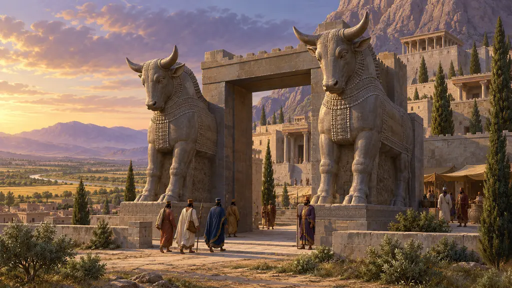
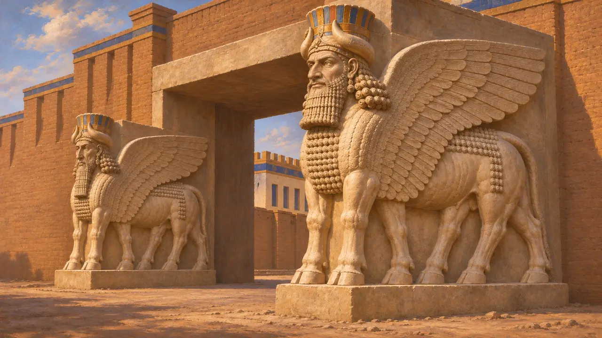
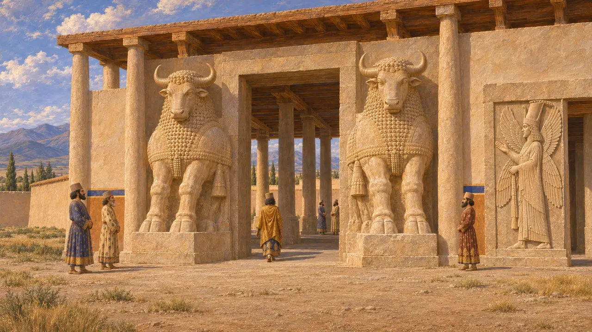
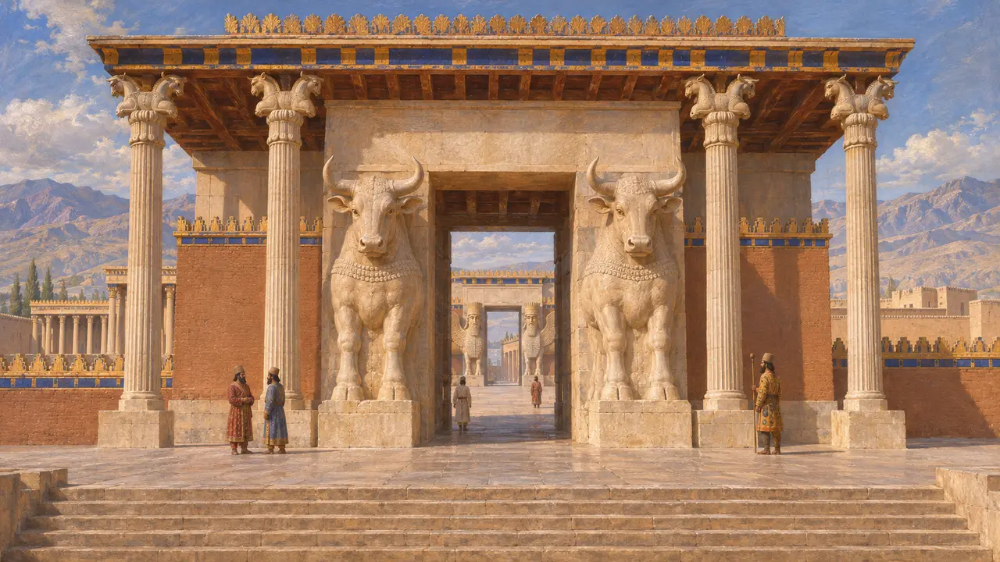
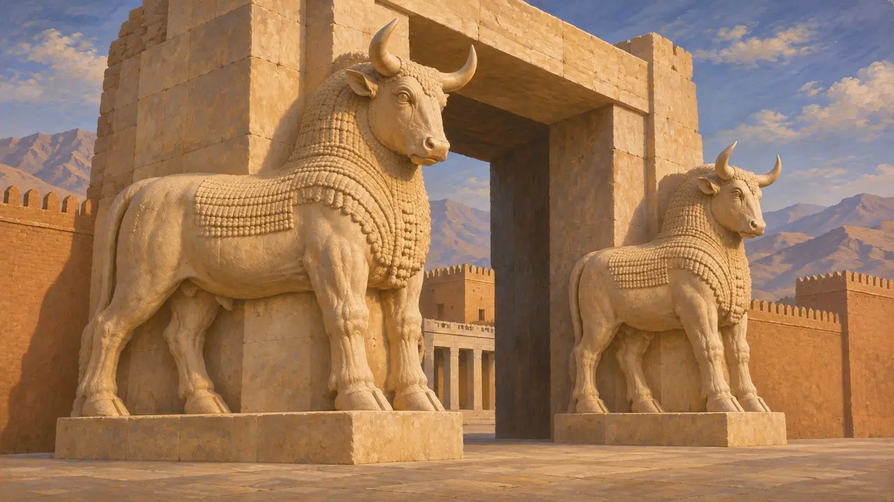

Taureaux de porte
Taureaux de pierre colossaux flanquant les portes royales, Pasargades et Persépolis, vers 540-450 av. J.-C.
Des paires de taureaux colossaux en pierre se dressaient aux portes des pavillons d'entrée royaux perses, d'abord à la porte de Cyrus à Pasargades, puis à la Porte de toutes les nations de Xerxès à Persépolis. Les Perses empruntèrent l'idée aux taureaux ailés à tête humaine des palais assyriens. Ces taureaux marquaient sans doute le seuil entre le monde extérieur et le domaine propre du Roi.
Dans le jeu : Le jeu range les Taureaux de porte parmi ses bâtiments d'habitat, comme élément de sculpture de porte. Historiquement, de tels colosses ne se dressaient qu'aux pavillons d'entrée royaux et aux palais, jamais devant les demeures ordinaires ni dans les rues.

Précurseurs assyriens
Dans les sourcesDu IXe au VIIe siècle av. J.-C., les rois assyriens dressaient des taureaux ailés à tête humaine aux portes et aux entrées des salles du trône de leurs palais de Nimroud, Khorsabad et Ninive. La plupart étaient sculptés dans un seul bloc gigantesque. Les versions assyriennes comptaient d'ordinaire cinq pattes, afin de paraître complètes de face comme de profil. Les fouilleurs en ont mis au jour un grand nombre au XIXe siècle.
J. E. Reade, Assyrian Sculpture, 1983

Le pavillon d'entrée de Cyrus à Pasargades
Dans les sourcesLe pavillon d'entrée de Pasargades, que les fouilleurs appellent porte R, était une salle à colonnes construite sous Cyrus. Les fouilles ont montré que des taureaux colossaux flanquaient ses portes principales, mais seules leurs parties inférieures subsistent. Une porte latérale a conservé le relief d'un personnage à quatre ailes coiffé d'une couronne de style égyptien. Ce personnage mêlait éléments assyriens, élamites et égyptiens, à la manière caractéristique des bâtisseurs de Cyrus.
D. Stronach, Pasargadae, 1978

Porte de Toutes les Nations de Xerxès
Dans les sourcesAu sommet du grand escalier menant à la terrasse de Persépolis, Xerxès fit bâtir un pavillon d'entrée à quatre colonnes. Des taureaux sans ailes ni tête humaine gardent sa porte occidentale, face à l'escalier ; des taureaux ailés à tête humaine coiffés de tiares à cornes gardent la porte orientale. Une inscription trilingue placée au-dessus (XPa) déclare que Xerxès bâtit cette Porte de toutes les nations par la grâce d'Ahuramazda. Des taureaux colossaux flanquaient aussi le portique de la Salle aux cent colonnes, achevée sous Artaxerxès Ier.
E. F. Schmidt, Persepolis I, 1953; XPa

Ce que signifiaient les taureaux
ContestéEn Assyrie, de telles figures étaient des esprits protecteurs qui écartaient le mal du seuil. Les historiens débattent encore pour savoir si les Perses partageaient cette croyance ou se servaient surtout des taureaux comme d'un signe de puissance royale emprunté à un empire plus ancien. Les taureaux de Persépolis ont quatre pattes, et non cinq comme en Assyrie. Les têtes de Pasargades étant perdues, on ignore aussi si tous les taureaux de Cyrus avaient une tête humaine.
J. Curtis and N. Tallis (eds), Forgotten Empire, 2005
Sources
- D. Stronach, Pasargadae, 1978
- E. F. Schmidt, Persepolis I, 1953
- XPa
- J. E. Reade, Assyrian Sculpture, 1983
- J. Curtis and N. Tallis (eds), Forgotten Empire, 2005
- P. Briant, From Cyrus to Alexander, 2002